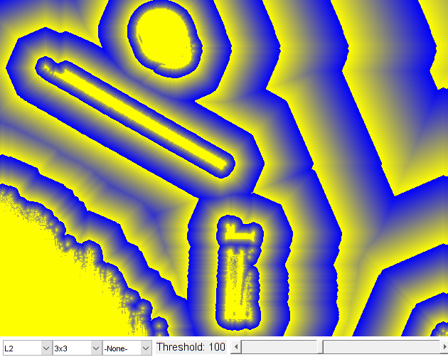

Distance Transform
Program to demonstrate the use of the distance transform function between edge images.
Distance types:
- L1: use L1 metric
- L2: use L2 metric
- C: use C/Inf metric
Mask sizes:
- 3: use 3x3 mask
- 5: use 5x5 mask
- 0: use precise distance transform
Label types:
- None: no labels
- CComp: switch to Voronoi diagram mode.
- Pixel: switch to pixel-based Voronoi diagram mode.
Sources:
function varargout = distrans_demo_gui(im) % load source image if nargin < 1 src = imread(fullfile(mexopencv.root(),'test','stuff.jpg')); elseif ischar(im) src = cv.imread(im, 'Grayscale',true); else src = im; end % we expect a grayscale image if size(src,3) == 3, src = cv.cvtColor(src, 'RGB2GRAY'); end % create the UI h = buildGUI(src); if nargout > 0, varargout{1} = h; end end function onChange(o,~,h) %ONCHANGE Event handler for UI controls % options (distance types, mask sizes, and voronoi label types) dists = {'L1', 'L2', 'C'}; masks = {'3', '5', 'Precise'}; labels = {'', 'CComp', 'Pixel'}; % retrieve current values from UI controls distType = get(h.pop(1), 'Value'); maskSize = get(h.pop(2), 'Value'); voronoiType = get(h.pop(3), 'Value'); thresh = round(get(h.slid, 'Value')); if o == h.slid set(h.txt, 'String',sprintf('Threshold: %3d',thresh)); end if distType ~= 2 && o == h.pop(1) % for L1 or C distance, mask forced to 3x3 maskSize = 1; set(h.pop(2), 'Value',maskSize); end if voronoiType ~= 1 if o == h.pop(1) || o == h.pop(2) % if distance/mask changed, revert back to no labels mode voronoiType = 1; set(h.pop(3), 'Value',voronoiType); elseif o == h.pop(3) % if voronoi mode was enabled, fix distance to L2 and mask to 5x5 distType = 2; maskSize = 2; set(h.pop(1), 'Value',distType); set(h.pop(2), 'Value',maskSize); end end % threshold image if true bw = uint8(h.src >= thresh) * 255; else bw = cv.Canny(h.src, [1 3]*thresh); bw = cv.bitwise_not(bw); end % compute distance map if voronoiType == 1 D = cv.distanceTransform(bw, ... 'DistanceType',dists{distType}, 'MaskSize',masks{maskSize}); else [D, labels] = cv.distanceTransform(bw, ... 'DistanceType',dists{distType}, 'MaskSize',masks{maskSize}, ... 'LabelType',labels{voronoiType}); end % build output image if true if voronoiType == 1 % begin "painting" the distance transform result D = abs(D*5000) .^ 0.5; D32s = bitand(int32(D + 0.5), 255); D8u1 = uint8(D32s); D8u2 = uint8((D32s * -1) + 255); D8u = cat(3, D8u2, D8u2, D8u1); else if true clrs = single(lines(7) * 255); else clrs = [0 0 0; 0 0 255; 0 128 255; 0 255 255; 0 255 0; 255 128 0; 255 255 0; 255 0 0; 255 0 255]; end idx = mod(labels - 1, size(clrs,1)-1) + 1; idx(labels == 0 | D == 0) = 0; scale = 1 ./ (1 + D.*D * 0.0004); D8u = reshape(clrs(idx+1,:), [size(labels) 3]); D8u = uint8(bsxfun(@times, D8u, scale)); end else if voronoiType == 1 N = 256; D8u = uint8(mod(D*2, N)); else N = max(labels(:)); N = min(double(N), 256); D8u = uint8(mod(labels, N)); end D8u = ind2rgb(D8u, jet(N)); D8u(repmat(bw == 0, [1 1 3])) = 255; end % show result set(h.img, 'CData',D8u); drawnow; end function h = buildGUI(img) %BUILDGUI Creates the UI % parameters distType = 2; % L2 maskSize = 1; % 3x3 voronoiType = 1; % None thresh = 100; % brightness threshold max_thresh = 255; sz = size(img); sz(2) = max(sz(2), 350); % minimum figure width % build the user interface (no resizing to keep it simple) h = struct(); h.src = img; h.fig = figure('Name','Distance Map', ... 'NumberTitle','off', 'Menubar','none', 'Resize','off', ... 'Position',[200 200 sz(2) sz(1)+29]); if ~mexopencv.isOctave() %HACK: not implemented in Octave movegui(h.fig, 'center'); end h.ax = axes('Parent',h.fig, 'Units','pixels', 'Position',[1 30 sz(2) sz(1)]); if ~mexopencv.isOctave() h.img = imshow(img, 'Parent',h.ax); else %HACK: https://savannah.gnu.org/bugs/index.php?45473 axes(h.ax); h.img = imshow(img); end h.pop(1) = uicontrol('Parent',h.fig, 'Style','popupmenu', ... 'Position',[5 5 70 20], 'TooltipString','Distance Type', ... 'String', {'L1','L2','C'}, 'Value',distType); h.pop(2) = uicontrol('Parent',h.fig, 'Style','popupmenu', ... 'Position',[75 5 70 20], 'TooltipString','Mask Size', ... 'String',{'3x3','5x5','Precise'}, 'Value',maskSize); h.pop(3) = uicontrol('Parent',h.fig, 'Style','popupmenu', ... 'Position',[145 5 70 20], 'TooltipString','Label Type', ... 'String',{'-None-','CComp','Pixel'}, 'Value',voronoiType); h.txt = uicontrol('Parent',h.fig, 'Style','text', 'FontSize',11, ... 'Position',[220 5 100 20], 'String',sprintf('Threshold: %3d',thresh)); h.slid = uicontrol('Parent',h.fig, 'Style','slider', 'Value',thresh, ... 'Min',0, 'Max',max_thresh, 'SliderStep',[1 10]./(max_thresh-0), ... 'Position',[325 5 sz(2)-330 20]); % hook event handlers, and trigger default start set([h.slid, h.pop], 'Callback',{@onChange,h}, ... 'Interruptible','off', 'BusyAction','cancel'); onChange(h.slid,[],h); end